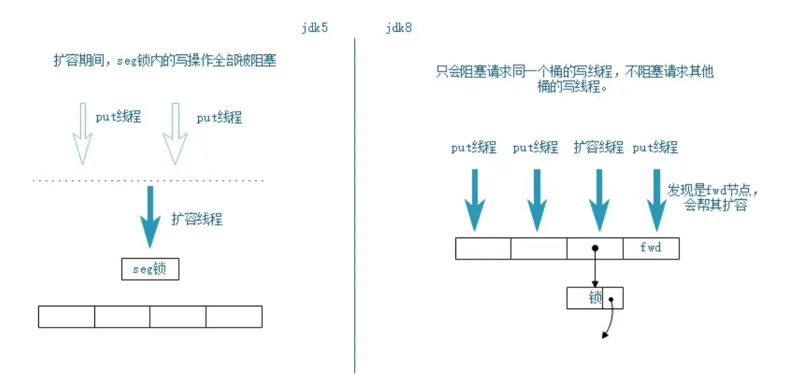
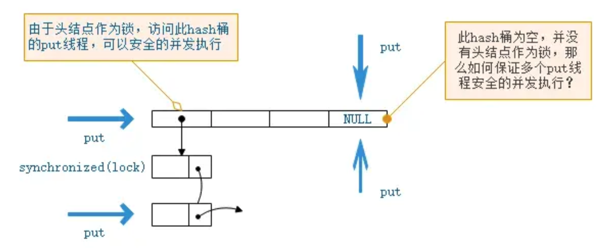
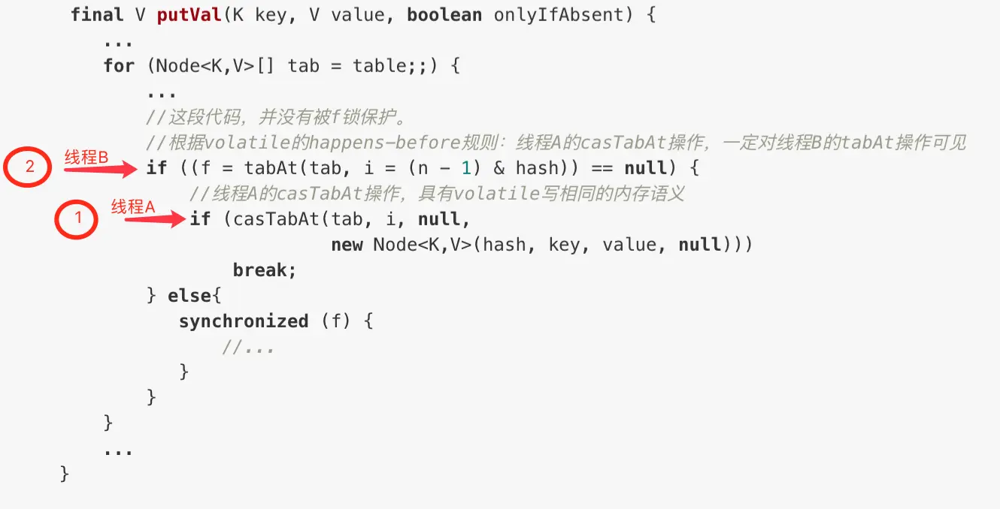

ConcurrentHashMap 锁粒度
JDK8 中，ConcurrentHashMap 的锁粒度变小，不再是对 Segment 加锁，而是对桶的头结点加锁，这样大大提高的并发的性能。

那么在没有锁的情况下，如何保证多个线程的 put 不会相互覆盖？

无锁实现：for 循环 + CAS
CAS，即 compareAndSwap，原子的执行比较并交换的操作：当前内存值如果和预期值相等，则将其更新为目标值，否则不更新。
JDK8 通过 for 循环 + CAS 操作，实现并发安全的方式就是无锁算法（lock free）的经典实现。
1 | final V putVal(K key, V value, boolean onlyIfAbsent) { |
如下图所示，在不加锁的情况下：线程 A 成功执行 casTabAt 操作后，随后的线程 B 可以通过 tabAt 方法立刻看到 table[i] 的改变。原因如下：线程 A 的 casTabAt 操作，具有 volatile 读写相同的内存语义，根据 volatile 的happens-before 规则：线程 A 的 casTabAt 操作，一定对线程 B 的 tabAt 操作可见。

Java 原子类的自增操作，也是通过 for 循环 + CAS 操作的方式实现的：
1 | //JDK7版本的 AtomicInteger 类的原子自增操作 |